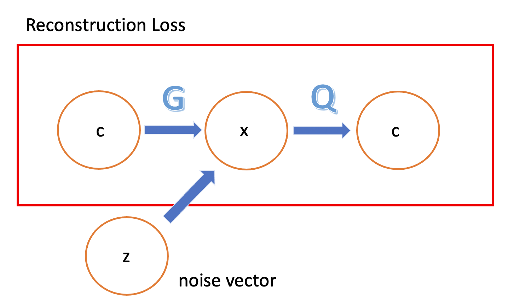
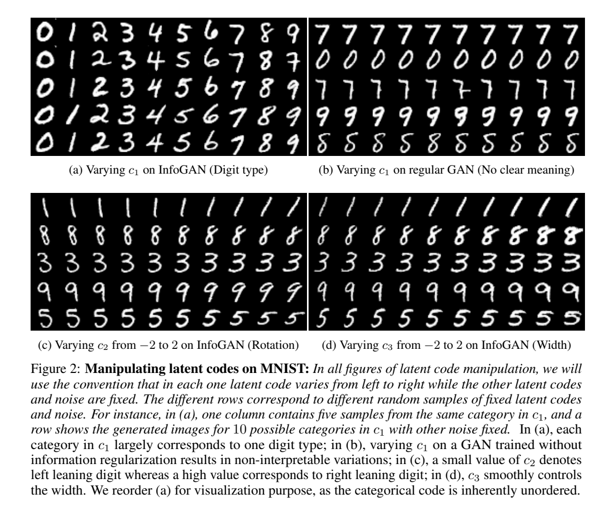

InfoGAN
by Jung Jaeeun
이번 포스팅에서는 InfoGAN에 대해서 알아보겠습니다. GAN에 대한 설명은 생략하겠습니다.
먼저, InfoGAN의 motivation 부터 알아보려고 합니다. GAN을 통해 우리는 latent variable $z$에서 실제 데이터 $x$로 가는 mapping을 학습합니다. 그래서 $z$를 latent representation이라고 합니다. 그러나 아쉽게도 GAN은 entangled representation을 학습합니다. 아래는 disentagled/entagled의 차이점을 시각화한 그림입니다. (이미지 출처)

D보다는 B에서 manifold가 깔끔하게 학습되었고, GAN을 통해서 이런 깔끔한 manifold, 즉 disentangled representaion을 학습함으로써 이미지의 퀄리티와 explainability를 동시에 향상시켰다는 것이 이 논문의 주요 내용입니다.
Mutual Information for Inducing Latent Codes
원래 GAN에서는 input noise vector로 $z$를 넣어줍니다. 대부분 $z$는 $\mathcal{N}[\mathbf{0}, \sigma^{2} \mathbf{I}]$를 따른다고 가정합니다. generator는 어떤 제한없이 $z$를 그대로 받아서 이미지를 생성하게 됩니다. 결과적으로, $z$의 각 차원이 데이터의 semantic feature와 대응되지 않는다는 문제점이 생깁니다.
하지만 실제로 이미지 데이터는 semantically meaningful factors로 분해될 수 있습니다. 예를 들어, MNIST에서는 숫자의 휘어진 정도 또는 numerical identity(0-9)가 있겠습니다. 이런 특징들을 $z$가 잡을 수 있다면 훨씬 해석이 쉬운 동시에 원하는 이미지를 생성하기도 쉬울 것입니다.
이 논문에서는, input noise vector를 크게 두 파트로 분류합니다.
- $z$: incompressible한 noise
- $c$: latent code - data의 semantic feature에 해당합니다.
여기서 $c$는 factored distribution을 가정합니다. 왜냐하면 이미지의 각 salient feature가 독립이라고 가정하는 것이 합리적이기 때문입니다. 수식으로 나타내면 다음과 같습니다.
$P(c_{1}, …, c_{L}) = \prod_{i=1}^{L}P(c_{i})$
우리는 generator에 $z, c$를 인풋으로 넣어줍니다. 그러면 generator는 $G(z, c)$로 표현할 수 있습니다.
이제 이 논문에 key idea를 설명하겠습니다. 이 논문은 latent code $c$와 $G(z, c)$간에 high mutual information이 있어야 한다는 제약조건을 상정합니다. 따라서, $I(c;G(z, c))$는 높아야 합니다.
$I(X;Y)$란 $Y$가 관측되었을 때 $X$의 불확실성이 감소되는 정도를 의미합니다. 만약 $X$, $Y$가 indepentdent하다면 $I(X;Y)=0$이 성립합니다. 만약 information theory에 대해서 생소하다면 링크를 참조하면 좋을 것 같습니다.
따라서 우리의 목표는 다음과 같습니다.
$\min_{G}\max_{D}V_{I}(D, G) = V(D, G)-\lambda I(c;G(z,c))$
여기서 regularization term에 해당하는 $\lambda I(c;G(z,c))$는 latent code $c$의 information이 generation process에서 소실되지 않도록 강제합니다.
Variational Mutual Information Maximization
하지만 실제로 $I(c;G(z,c))$를 직접 최대화하는 것에는 어려움이 있습니다. 왜냐하면 $P(c \vert x)$를 알아야 하기 때문입니다. 따라서 우리는 variational lower bound 테크닉을 이용해서 $P(c \vert x)$를 $Q(c \vert x)$로 근사합니다. 이제 variational lower bound에 대해서 알아보겠습니다.
$I(c;G(z,c))=H(c)-H(c\vert G(z, c)=\mathbb{E_{x \thicksim G(z, c)}}[\mathbb{E_{c’ \thicksim P(c \vert x)}[log P(c’ \vert x)]}] + H(c)$
$=\mathbb{E_{x \thicksim G(z, c)}}[D_{KL}(P(c’ \vert x) \vert\vert Q(c’ \vert x))] +\mathbb{E_{c’ \thicksim P(c \vert x)}}[log Q(c’ \vert x)] + H(c)$
$\geq \mathbb{E_{x \thicksim G(z, c)}}[\mathbb{E_{c’ \thicksim P(c \vert x)}}[log Q(c’ \vert x)]] + H(c)$
$\mathcal{L_{I}}(G, Q) = \mathbb{E_{x \thicksim G(z, c)}}[\mathbb{E_{c' \thicksim P(c \vert x)}}[log Q(c' \vert x)]] + H(c)$
여기서도 문제가 발생합니다. $\mathbb{E_{c’ \thicksim P(c \vert x)}}[log Q(c’ \vert x)]$에 $P(c \vert x)$가 들어간다는 점입니다. 하지만 수리통계학의 lemma에 의해 해결가능합니다. (링크에 자세히 나와있습니다.) 구체적인 수식을 살펴보겠습니다. $G(z, c)$는 $P_{G}(x \vert z, c)$로 새로 나타낼 수 있습니다.
$\mathbb{E_{x \thicksim G(z, c)}}[\mathbb{E_{c’ \thicksim P(c \vert x)}}[log Q(c’ \vert x)]] = \mathbb{E_{x \thicksim P_{G}(x \vert z, c), c’ \thicksim P(c’ \vert x)}}[logQ(c’ \vert x)]$
$=\mathbb{E_{x \thicksim P_{G}(x \vert z, c), c \thicksim x, c’ \thicksim P(c’ \vert x)}}[logQ(c’ \vert x)]=\mathbb{E_{x \thicksim G(z, c), c \thicksim p(c)}}[logQ(c’ \vert x)]$
${L_{I}}(G, Q) = \mathbb{E_{x \thicksim G(z, c), c \thicksim p(c)}}[logQ(c' \vert x)] + H(c)$
그러면 이제 마지막식은 Monte Carlo simulation으로 손쉽게 구할 수 있고 최종목표식은 다음과 같습니다.
$\min_{G}\max_{D}V_{I}(D, G) = V(D, G)-\lambda{L_{I}}(G, Q)$
수식으로만 보니 와닿지 않기 때문에 이 논문을 요약하여 한장의 그림으로 나타내어 보았습니다.

핵심은 generator로 하여금 semantic feature/latent code c를 복원할 수 있을 만큼 생성을 해라!가 되겠습니다.
Implementation
실제로 코드로 구현할 때는 $Q$를 neural network로 구현하되 $D$와 모든 convolution layer를 공유하고 $Q(c \vert x)$를 위한 FC layer만 추가해주었다고 합니다. 이로써 $Q$에 대한 cost는 vanilla GAN과 거의 동일해집니다.
$c_{i}$가 categorical 변수일 때는 $Q(c _{i}\vert x)$를 구하는데 softmax nonlinearity를 이용했고 continuous 변수일 때는 factored Gaussian으로 충분했다고 합니다.
또한 $\lambda$에 대한 튜닝도 쉬웠다고 하는데요. $c_{i}$가 categorical 변수일 때는 $\lambda$를 1로 두고, continuous 변수일 때는 그것보다 작은 값을 이용했다고 언급하고 있습니다. 마지막으로 GAN structure는 DC-GAN을 이용했습니다.
Experiments
Mutual Information Maximization
InfoGAN의 학습이 잘 되었다면 lower bound가 $H(c)$로 maximize 됩니다. 이말인즉슨 bound가 tight한 동시에 maximal mutual information을 얻었다는 뜻입니다. 원논문의 Fig1이 이를 시각화해서 보여주고 있습니다. 화질이 좋지 않아서 첨부하진 않았습니다. vanilla GAN은 lower bound가 $H(c)$로 maximize되지 않지만 InfoGAN은 빠르게 수렴하고 있습니다. 이는 vanilla GAN에서 generator는 이미지의 semantic feature를 잡아내지 못함을 뜻합니다.
Disentangled Representation
MNIST에 대해 살펴보겠습니다. $c_{1} \thicksim Cat(K=10, p=0.1)$을 사용했고 $c_{2}, c_{3}$은 continous variations를 나타내기 위한 변수로 사용했다고 합니다.

우리의 예상대로 $c_{1}$은 digit type을 나타내는 피쳐에 해당합니다. 그리고 $c_{2}, c_{3}$는 각각 rotation, width에 해당하는 피쳐가 되겠습니다.
다른 데이터셋을 시각화한 결과가 궁금하시다면 원논문을 참조하시면 됩니다. latent code $c$가 이미지의 semantic feature를 잘 잡아냄을 알 수 있습니다.
Reference
InfoGAN: Interpretable Representation Learning by Information Maximizing Generative Adversarial Nets
Subscribe via RSS